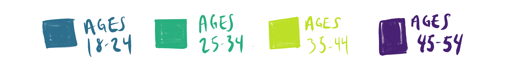

"News Drivers" by Demographic
People have diverse reasons for tuning into the news, and expectations for what makes a meaningful broadcast vary. Mouse over the points on the radar chart to discover what matters most to each age demographic.
Female demographics
Male demographics

Younger demographics

Middle-aged demographics
Many stations are interested in attracting a younger audience. In addition to investing in a robust online presence, young people don't generally cite innovative graphics or a contemporary aesthetic as a reason to tune into the news.